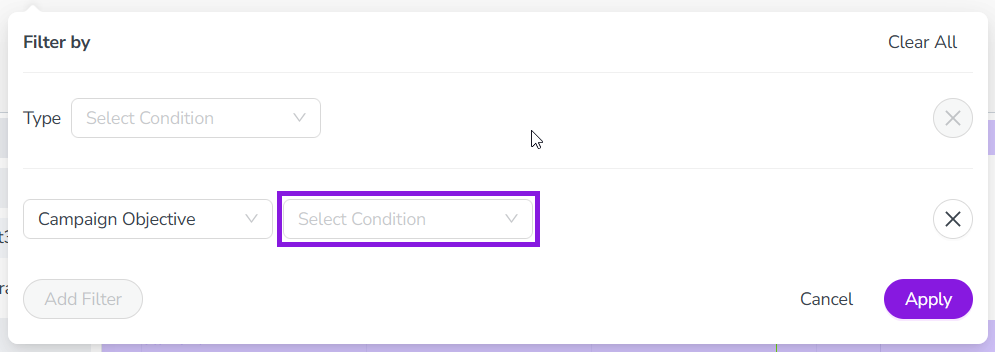
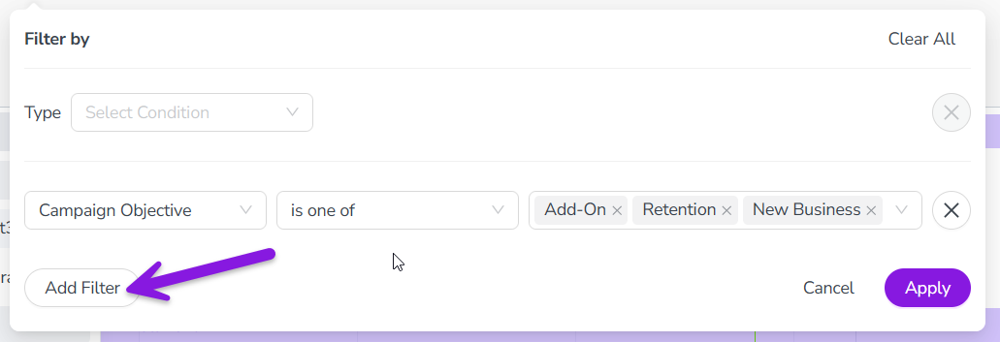

Filter activities
By default, the activity hierarchy in Uptempo Campaign Management displays all activities that you have access to, at all levels of the hierarchy. To make a large activity hierarchy easier to work with, you can use filtering to display only activities that match criteria of your choice.
You can filter by the following criteria types:
Activity type (or type group), for example to only view activities of a specific type
Attribute value, for example to only view activities that have a specific value for a selected attribute
Filter the activity hierarchy
In the Activities section, click
 Filter Activities in the toolbar. The Filter by panel opens.
Filter Activities in the toolbar. The Filter by panel opens.To filter by specific activity types or type groups, use the Type filter. On the Type line, use the Select Condition menu to choose an operator:
- is
To be displayed, activities must belong to a specified single activity type or type group. Use the Set a Value menu to select the activity type or type group.
- is one of
To be displayed, activities must belong to any one of a specified list of activity types or type groups. Use the checkboxes in the Set a Value menu to select the activity types or type groups.

To filter by any available attribute (such as Name, In-Market Date, etc.), use the Select Attribute menu to choose the attribute you want. After you choose an attribute, the Select Condition dropdown menu is shown:

Use the Select Condition menu to choose an operator:
- is
To be displayed, attributes must have a value for the selected attribute that exactly matches a specified value. If you choose this operator, use the Set a Value field to specify the value.
- is empty
To be displayed, activities must have no value for the selected attribute.
- is not empty
To be displayed, activities must have a value for the selected attribute.
- contains
To be displayed, attributes must have a value for the selected attribute that contains a specified value. If you choose this operator, use the Set a Value field that is shown to specify the value.
Optional: To add multiple attribute filter conditions, click the Add Filter button.

Another Select Attribute dropdown menu is displayed on a new line. Repeat steps 4 and 5 to configure the added filter condition. If you specify multiple attribute conditions, they will be treated as AND conditions (all specified conditions must be met).
If you want to remove any filter condition you have added, click
 Remove Condition beside it.
Remove Condition beside it.To apply the filter conditions you have set to the activity hierarchy, click Apply.
{kind=link}
The Filter by panel closes, and the activity hierarchy is filtered according to the filter conditions you have set.
Clear all filters from the activity hierarchy
In the Activities section, click
Filter Activities in the toolbar. The Filter by panel opens.In the Filter by panel, click Clear All.
All previously applied filters are removed, and the activity hierarchy displays all activities.